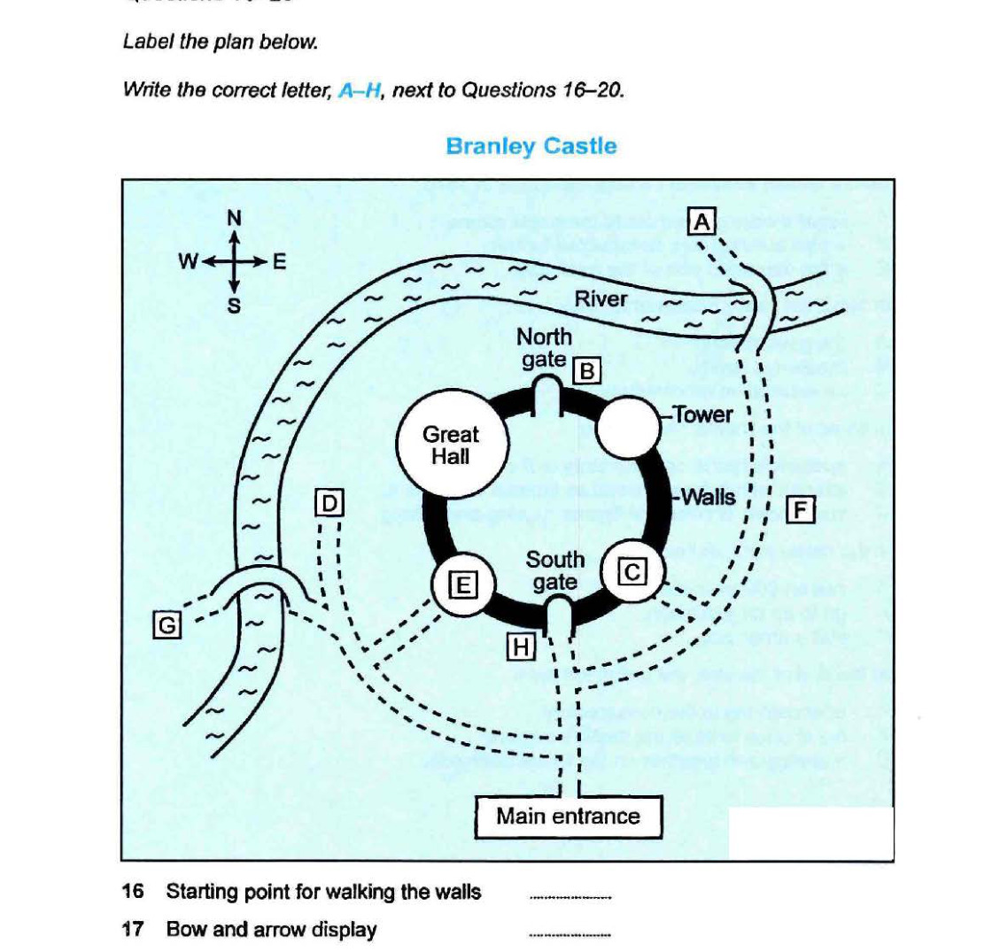

Cambridge IELTS 14
Time: approx. 30 minutes
Instructions
Digital recreation of Cambridge IELTS Listening Test 2.
Type answers in the gaps. Click options for multiple choice.
Print this page for paper-like practice.
Complete the notes below. Write ONE WORD AND/OR A NUMBER for each answer.
Questions 11–15: Choose A, B or C. Questions 16–20: Label the plan A–H.

Questions 21–24: Choose A, B or C. Questions 25–30: Matching A–H.
Complete the notes below. Write ONE WORD ONLY for each answer.
IELTS Listening Test 2 • Cambridge IELTS 14 • Practice recreation (content from official PDF)